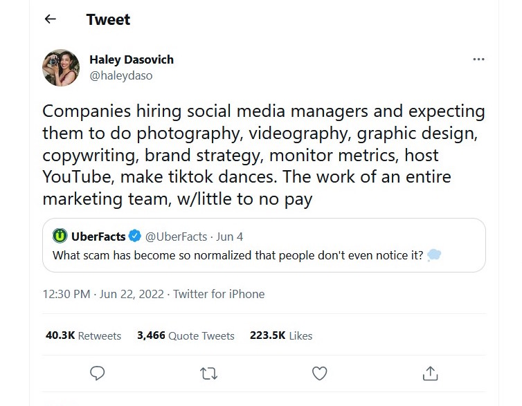

Social Media Strategy: Organic Engagement
The ability to make progress toward a more just and equitable world depends on connecting with people and building communities of shared purpose. The work depends upon growing awareness of your cause, educating people about why it is important, and gaining their commitment. Social media will be an outlet for news and information about your organization, but more importantly it becomes a tool to maintain relationships within a dynamic field of progressive organizations and individuals.
Celebrate life on earth. The message and work is life affirming. The communications inspire people. They see their own desires for a happy and healthy life in the work of your organization. If we maintain the ecosystems that humans and other living beings depend upon, we win. Everyone wins in this campaign. A healthy environment, a place to live and to thrive. This great project demands our attention, our understanding, our commitment. From a minimum of attention, social media can capture and inspire. It can lead to greater awareness of your organization and commitment to the cause.
Your social media helps them to experience the world. By bringing people to places they can be together and find purpose in the work of your organization, people make commitments. To others, to themselves, to your organization. The message is important, and it succeeds when it motivates people and brings them together. Create experiences, create relationships. People finding purpose in your organization will bring fruition to the work.
Pay People, Not Facebook
People who have followed you, they are now learning more about you. By posting articles and news about your organization, you educate people considering your work among all the other service providers in your field. If your campaign is effective, they make a commitment to you.
To reach beyond existing followers, an organization might pay to have their posts appear in news feeds of their intended audience. For organizations that choose not to spend money on boosting their posts, they can pursue organic engagement to reach people.
Obviously, having your posts shared is desirable. But a few shares isn’t sufficient to raise awareness of your work. Posts that expand awareness are widely shared, propelling your posts into the news feeds of people who have never heard of your organization.
Images and emotions make followers feel something about a post, this can compel them to share. Inspiring. Entertaining. It is an art to create content that people can’t resist sharing with their friends. Your organization needs this to build awareness. But it can be out of reach for an organization without a creative team of writers, visual designers, and media producers.

An organic social media strategy that can be advanced by one account manager involves more than content creation. Rather than thinking of your social media accounts as a mere outlet for information and news about your organization, reimagine your social media as spaces for listening and conversation.
Listening
Social media is a research tool.
Follow accounts of all the people and organizations working in your field.
1. Each time you follow an individual or organization, it is a low-touch no-cost advertisement for your work. Platforms send a notification of new followers, and many people will look to see who started following them.
2. To find more accounts to follow, simply look at someone whose work you enjoy or someone significant in your field and click to see who they are following. Then follow any accounts you see listed there that look relevant and interesting.
3. The more accounts you find that post valuable content, the more interesting the work of managing your social media becomes.
Follow accounts like tuning in a radio station; you dial past the noise to hear the signal.
1. If after following an account you don’t like what they post, unfollow them. This is curation. Tune in the station you want to hear.
2. Lists are useful when you want to unfollow an account so it doesn’t appear in your news feed, you can still recall that account and see their posts on occasion.
3. Lists for specific topics relevant to your work can help with research. This allows a networking of individuals and organizations related to an important issue.
The White House follows around five people and has millions of followers. A parasocial relationship is not a strategy. It’s a mistake to think that it makes you look good to follow a limited number of accounts. You can’t listen to anyone if you are trying to follow as few as possible and somehow imagine you will have many people following you.
Millions of people use these networks and many tens of thousands post interesting content. If you start now and find a thousand more accounts to follow, that’s hundreds of people who have seen your account listed in their notifications. They may follow you. And the work of discovering new accounts is worthwhile research that deepens your understanding of the field. This effort centers your organization within an unfolding and ongoing conversation.
To Retweet or Not to Retweet
Some organizations use social media like a newsletter, informing their audience about their work. And yet social media allows interacting with people and organizations, it is more than a one-way delivery of information.
By retweeting another organization or professional, you build affinity with them. And this coalition of shared purpose is helpful when you post. Those who have been retweeted are more likely to retweet your posts.
If your organization prefers that each post be from your account, rather than retweeting, you can post the headline or an important quote along with the link to the article. Naturally, it is possible to do a coherent mix of both retweets and posting.
Reposting Content
People used to be able to Like other organizations as their Facebook business page and easily see and share the content of allied organizations. That is no longer possible at the click of a button. And Instagram has no sharing feature. But online content sourced on Twitter can be shared on other platforms.
Your organization needs to be where people are, and they are across all of the platforms.
Journalists and media organizations, government departments and elected officials, professionals in most any field will post links to their work and engage on Twitter. Through a well-curated Twitter account, you can find articles to repost on Facebook and your other outlets. This is a no-cost way to offer something of value to people. Once a day post an article relevant to your work, a story that speaks to why they follow you.
Conversation
You follow to listen. You listen to have a conversation.
1. People on social media ask questions. If you can help them, then provide them with information, advice, whatever it is they need.
2. To begin a conversation, you can follow someone and simply share one of their posts. They might follow you back. That acknowledgement of their presence is the beginning of a conversation.
3. When you want to have a conversation specific to your field, search for a word or phrase that draws up all the posts that contain those terms. You might find a post to share or an account to follow or a question you can address.
Not everyone will follow you forever—that doesn’t matter. Social media includes so many people, they come and go. The ones that keep listening to you, they just might make a deeper commitment.
Commitment
Social media strategy gains definition when you intend to achieve a goal. Some organizations have many goals. A strategy may build toward and indeed support multiple goals. To expand public awareness of your organization, to educate them about your services, and to gain their commitment, each are overlapping yet distinct goals.
If the goal is to build awareness, your approach to social media is different than trying to convince someone to buy your service, download your book, sign-up to your newsletter, or vote. And yet building awareness is necessary to achieve your other goals. To convince them to commit to your cause, they have to know you exist. They have to know about you and understand why your product or service or candidate is better than the others on offer.
People online who encounter your work on social media can be at any phase of awareness, education, or commitment. Each post may be specific to one goal, but you can interweave posts with different goals throughout your social media calendar. There is no single persona you need to reach—your audience is at different phases of awareness, education, and commitment. During the week, include posts specific to building awareness, further educating, and gaining commitment.
To gain commitment, you have to understand your audience and solve their problems. They are no longer reading posts about you, they are reading your posts about their problems and how to solve them.
People largely experience social media on a personal device, a phone or laptop, their desk at home or at work. It is both mass media and extremely intimate. By recognizing the personal, by appealing to an individual rather than a demographic, you can speak with a persuasive voice. It is the organization’s voice, there is no “I” and yet the voice is human. With courtesy and empathy, all communications serve to inform and inspire, to engage and motivate.
Presence
Listening and conversation happens when an account manager is on the platform. If the manager stops posting or suspends a paid ad campaign, the traffic through social media to your website and campaign will diminish. A successful campaign may produce a spike in traffic to your website: an increase in awareness, education, and commitment. But that campaign is directly dependent upon labor or paid ads.
Your activity creates presence. Your presence online includes all of your previous posts. And people may find your content. When someone actively searches, your posts might appear in their search results. The searcher has intent. This is an opportunity for your organization to be discovered. The more content you have posted to social media that is relevant to their search terms, the more likely your organization will surface in the results.
You can increase your chances of being discovered in search. The more posts, the more text you write that matches the intent of your audience, the more likely you will be discovered.
Searching with Intent
Social media campaigns lead to your organization’s website. Your landing pages may vary depending on each post and campaign, but having numerous pages on your site with interesting and entertaining and educational content is the foundation of your online presence.
The best way to sustain long-term discovery of your organization is in the search engine results page. Create multiple pages of content with titles and URLs that speak directly to the intent of the audience you seek. This helps your organization to appear in search results.
Identify the questions and needs of your constituents. What do they search for online?
Answer those relevant questions on your website with concise and evergreen pages that you can update whenever necessary. A well-structured site can have many pages that match vital search terms and provide resources related to the issues people care about. Finding an answer to their question online, they will be finding you.
People who search with the intent to find information about the issues your organization addresses can become your new members and supporters, volunteers and donors.